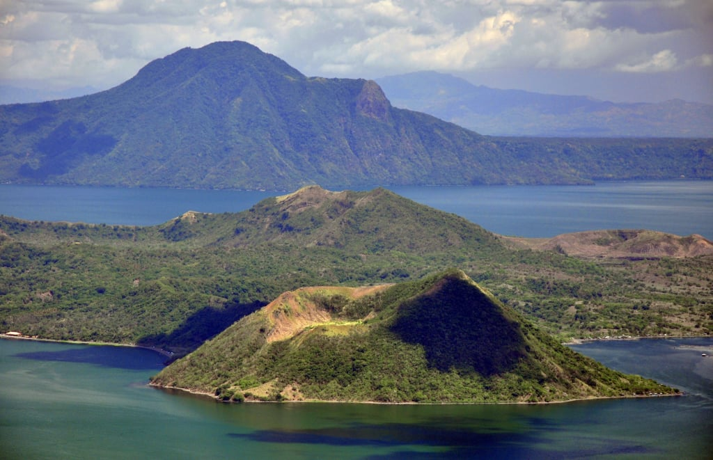

Bulkang Taal

Description
Taal Volcano (IPA: [taʔal]; Tagalog: Bulkang Taal) is a 23 sq km post-caldera feature and is composed of 47 identified cones and craters. On the island is the 2-km wide and 80-m deep Main Crater Lake. Volcanic processes such as base surges, ashfalls, and effusions of lava led to the formation of this island volcano.
History
Taal Volcano has had several violent eruptions in the past, causing deaths on the island and the populated areas surrounding the lake, with an overall death toll of about 6,000. Because of its proximity to populated areas and its eruptive history, the volcano was designated a Decade Volcano, worthy of close study to prevent future natural disasters. The site was declared National Geological Monument in 1998 and a national park in 2018.